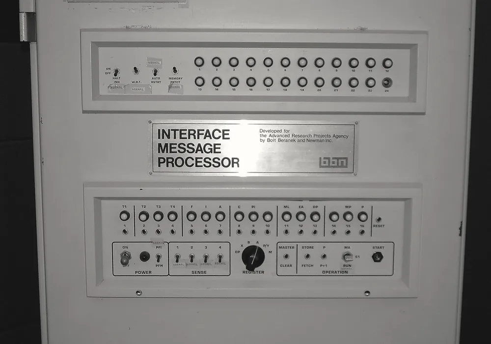
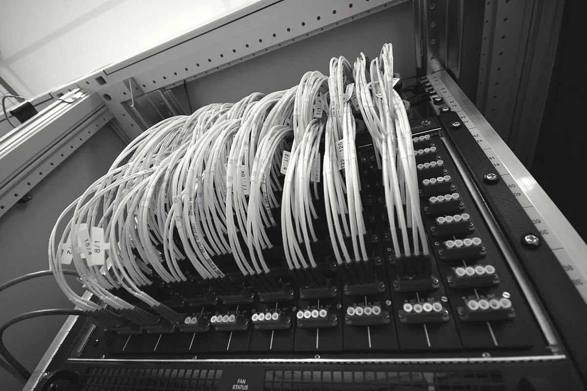
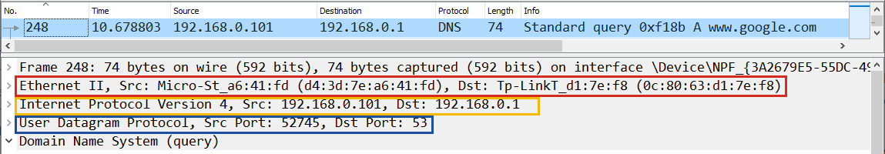

hai mô hình
mô hình chia việc và bộ protocol đang chạy
Không có protocol nào tên OSI
Bắt các packet đi qua NIC rồi đọc từng layer bên trong, việc mà phần Lab cuối bài sẽ làm, thì bạn không gặp protocol nào tên OSI. Bạn gặp , IP, TCP, UDP, HTTP và DNS. Trừ Ethernet là chuẩn của mạng có dây, các protocol ấy thuộc bộ TCP/IP, bộ protocol mà Internet đang chạy.
TCP/IP chia làm bốn layer, ghi trong RFC 1122 năm 1989. RFC (Request for Comments) là loạt văn bản chuẩn của Internet, ai cũng đọc miễn phí.
The protocol layers used in the Internet architecture are as follows: […] Application Layer […] Transport Layer […]
Internet Layer […] Link Layer
The application layer of the Internet suite essentially combines the functions of the top two layers --
Presentation and Application -- of the OSI reference model.
Layer Transport và layer Internet của TCP/IP khớp với layer 4 và layer 3 của OSI. Layer Link gộp layer 1 và layer 2, còn layer Application trùm các layer 5, 6 và 7 (Hình 2). Hai mô hình tả cùng những việc, chỉ khác chỗ gộp hay tách, và khi người làm nghề nói “layer 4”, “layer 7” thì đó là số theo OSI.
OSI, 7 layer
TCP/IP, 4 layer
TCP/IP có trước
Mô hình OSI và TCP/IP đều chia việc nối mạng thành layer, vậy vì sao Internet chạy bằng protocol của TCP/IP, còn bạn không gặp protocol nào tên OSI? Câu trả lời nằm ở thứ tự hai bên ra đời và ở hướng đi của mỗi bên. TCP/IP lớn lên từ một mạng đang chạy: ARPANET đã nối máy của các trường đại học và viện nghiên cứu ở Mỹ từ năm 1969, Vint Cerf và Bob Kahn công bố bài báo đặt nền cho TCP/IP năm 1974 để mạng ấy nối được với những mạng khác, và protocol được sửa dần theo chỗ nào chạy không được. ISO, tổ chức đặt ra các tiêu chuẩn quốc tế, đi ngược lại. Từ năm 1977 họ vẽ mô hình trước, tức mô hình bảy layer của OSI, rồi mới tính protocol cho từng layer.
Đặc tả của IP và TCP được công bố thành RFC 791 và RFC 793 năm 1981, và ngày 1/1/1983 cả ARPANET chuyển hẳn sang TCP/IP. ISO tới năm 1984 mới công bố mô hình OSI, lúc ấy Internet đã chạy bằng TCP/IP rồi. Đổi một mạng đang có người dùng sang protocol khác tốn hơn nhiều so với giữ nguyên, nên TCP/IP ở lại.

Packet
mỗi packet tự đi, không ai giữ đường
Cắt thành packet, mỗi packet tự đi
Điện thoại bàn ngày xưa giữ riêng một đường dây cho mỗi cuộc gọi tới khi gác máy, cách làm ấy gọi là circuit switching. Internet thì không giữ đường cho ai. Dữ liệu được cắt thành packet, packet nào cũng mang đủ địa chỉ nơi gửi và nơi nhận, nên router chỉ đọc địa chỉ của packet đang cầm, đẩy packet đi rồi quên luôn. Cách này gọi là packet switching (packet switching), và hình động ở đầu trang vẽ lại chuyện ấy.
.jpg){kind=link}

Không ai giữ đường thì hai packet của cùng một request có thể đi hai đường khác nhau, tới nơi lộn thứ tự, hoặc mất khi hàng chờ của router bị đầy. IP không lo những chuyện ấy; RFC 791 ghi thẳng rằng IP “does not provide a reliable communication facility”. Gửi lại và ráp lại là việc của TCP ở hai đầu, nên router được làm đơn giản, và một router hỏng thì các packet sau đi vòng qua router khác.
Một lần gọi là bao nhiêu packet
Một lần curl http://example.com/ là 12 packet, mình bắt được trên WSL, một máy Linux chạy bên trong laptop,
ngày 30/10/2026. Bảng 1 liệt kê 12 packet ấy, còn cách bắt packet thì bạn sẽ làm ở Lab 5.
| Packet | Chiều | Dài (byte) | Là gì |
|---|---|---|---|
| 1 | đi | 74 | TCP SYN: xin mở kết nối tới port 80 |
| 2 | về | 74 | TCP SYN, ACK: server đồng ý |
| 3 | đi | 66 | TCP ACK: kết nối mở xong |
| 4 | đi | 141 | HTTP GET / HTTP/1.1 |
| 5 | về | 66 | TCP ACK: server báo đã nhận packet 4 |
| 6 | về | 994 | Header của câu trả lời HTTP/1.1 200 OK |
| 7 | về | 71 | phần cuối của câu trả lời |
| 8, 9 | đi | 66 | TCP ACK: máy mình báo đã nhận packet 6, 7 |
| 10 | đi | 66 | TCP FIN, ACK: xin đóng kết nối |
| 11 | về | 66 | TCP FIN, ACK: server cũng đóng |
| 12 | đi | 66 | TCP ACK: đóng xong |
Ba packet đầu là three-way handshake để mở kết nối, ba packet cuối là đóng kết nối. SYN,
ACK và FIN là tên các flag trong TCP header: SYN xin mở, ACK báo đã nhận,
FIN xin đóng. Request chỉ nằm trong packet 4, câu trả lời nằm trong packet 6 và 7, còn các packet khác là packet báo đã
nhận.
router chọn đường
tra bảng, longest prefix match thắng
routing table
Router chọn hướng cho packet dựa vào một bảng, mỗi dòng ghi “Packet tới dải địa chỉ này thì đẩy ra hướng kia”, gọi là routing table. Laptop của bạn cũng có routing table, vì trước khi packet rời máy, Windows cũng phải chọn giao packet cho thiết bị nào.
Routing table ghi dải địa chỉ, viết theo kiểu 10.88.88.0/24, trong đó số sau dấu gạch chéo là số bit đầu cố
định, gọi là prefix. Địa chỉ IPv4 dài 32 bit, nên /24 cố định ba số đầu 10.88.88
và dải có 256 địa chỉ. Windows ghi prefix theo kiểu netmask, ví dụ 255.255.255.0 là /24,
255.255.240.0 là /20, còn 0.0.0.0 là /0.
Hình 3 là routing table trên laptop của mình, lúc nối một mạng WiFi khác với lúc chạy tracert ở Bài 00, nên cục phát WiFi
ở đây có địa chỉ 10.88.88.88.
$ route print -4
IPv4 Route Table
===========================================================================
Active Routes:
Network Destination Netmask Gateway Interface Metric
0.0.0.0 0.0.0.0 10.88.88.88 10.88.88.161 30
10.88.88.0 255.255.255.0 On-link 10.88.88.161 286
127.0.0.0 255.0.0.0 On-link 127.0.0.1 331
127.0.0.1 255.255.255.255 On-link 127.0.0.1 331
172.21.16.0 255.255.240.0 On-link 172.21.16.1 5256
[…]On-link nghĩa là máy đích nằm ngay trong mạng ấy.Dòng 172.21.16.0/20 là mạng ảo nối Windows với ,
hai dòng 127... là localhost, còn dòng 10.88.88.0/24 là mạng WiFi. Dòng
0.0.0.0/0 khớp mọi địa chỉ và giao packet cho cục phát WiFi; dòng ấy gọi là default route.
Longest prefix match thắng
Một địa chỉ có thể khớp nhiều dòng cùng lúc, ví dụ 127.0.0.1 khớp cả 0.0.0.0/0,
127.0.0.0/8 lẫn 127.0.0.1/32. Khi đó dòng có prefix dài nhất thắng, vì dòng ấy nói về đích cụ thể
nhất. Luật này gọi là longest prefix match, và nhờ luật này mà default route chỉ thắng
khi không còn dòng nào khác khớp.
0.0.0.0/010.88.88.8810.88.88.0/24On-link127.0.0.0/8On-link127.0.0.1/32On-link172.21.16.0/20On-link
chọn một địa chỉ ở trên
Gửi tới 57.144.64.1 của facebook.com thì chỉ dòng 0.0.0.0/0 khớp, nên packet đi tới cục phát WiFi.
Router càng ở sâu trong Internet thì bảng càng dài, tới mức có router phải giữ dòng cho từng dải địa chỉ của cả
Internet.
TTL
mỗi router trừ một, về không thì bỏ
Khi hai router đẩy qua đẩy lại
Routing table có lúc sai, ví dụ router A đẩy packet sang B, còn B lại đẩy packet về A. Để packet không chạy vòng mãi, IP header có một ô tên là TTL (Time to Live). Máy gửi đặt sẵn một con số vào ô này, Linux là 64, Windows là 128, router nào chuyển packet đi cũng trừ con số ấy đi 1, và packet có TTL về 0 thì bị bỏ.
Router bỏ packet thường gửi về cho máy gửi một lời báo bằng ICMP (Internet Control Message Protocol), protocol báo lỗi ở layer 3. Lời báo vì TTL về 0 tên là Time Exceeded, và địa chỉ gửi của lời báo là địa chỉ của router đã bỏ packet.
Lệnh tracert ở Bài 00 chạy bằng TTL
tracert ở Bài 00 dựa vào lời báo ấy. Nó gửi một packet mang TTL 1, router đầu tiên bỏ packet rồi báo về, thế là lộ địa chỉ; rồi nó gửi TTL 2, TTL 3, cứ thế cho tới khi máy đích trả lời bằng một lời đáp ICMP gọi là Echo Reply. Mỗi giá trị TTL được gửi ba lần, nên mỗi dòng của tracert có ba con số thời gian.
- 1
10.88.88.88Time Exceeded, cục phát WiFi - 2
(nhà mạng, đã ẩn)Time Exceeded - 3
(nhà mạng, đã ẩn)Time Exceeded - 4
…Time Exceeded - 5
57.144.64.1Echo Reply, tới nơi
Dòng toàn dấu sao ở chặng 6 trong Bài 00 là router không gửi Time Exceeded về, hoặc có gửi nhưng lời báo bị chặn trên đường về.
giữa các nhà mạng
AS, BGP và ngày Facebook biến mất
Mỗi nhà mạng là một AS
Routing table dài tới cỡ cả Internet thì không ai gõ tay được, nên các nhà mạng tự báo cho nhau. Mạng của một nhà mạng hay một
công ty lớn, nhìn từ ngoài vào, là một khối có số riêng, gọi là AS (Autonomous System). Mạng của
Facebook là AS32934, và 57.144.64.1 của facebook.com nằm trong dải 57.144.64.0/23 của AS này. Các
AS nối với nhau bằng dây riêng, hoặc qua một điểm trao đổi Internet (IXP) như ở Ảnh 3.


BGP: báo cho nhau “tôi giữ dải này”
Các AS báo đường cho nhau bằng BGP (Border Gateway Protocol). Router BGP của Facebook báo cho các AS kế
bên rằng “dải 57.144.64.0/23 ở chỗ tôi”, và việc báo như thế gọi là announce. AS nhận
được lời announce thì ghi đường tới dải ấy vào routing table, rồi announce tiếp cho các AS khác, kèm AS number của nó ghi thêm
vào đầu. Dãy AS number ấy gọi là AS path, ví dụ 3491 32934 nghĩa là đi qua AS3491 rồi tới AS32934 của
Facebook.
Ngày Facebook tự rút announce
AS rút announce một dải thì các AS khác xoá đường tới dải ấy, và dải ấy biến khỏi Internet dù máy bên trong vẫn chạy. Ngày 4/10/2021, một lệnh bảo trì vô tình cắt mạng nối các data center của Facebook. Server DNS của Facebook được cài để tự rút announce khi mất kết nối tới data center, nên tất cả cùng rút, và suốt nhiều giờ không ai đổi được facebook.com ra địa chỉ. Vì sao không server nào khác trả lời thay được? Muốn biết thì phải xem DNS tìm một địa chỉ ra sao.
DNS
một cái tên, ba cấp và một cache
Không ai giữ hết mọi tên
DNS chia tên ra theo cấp, mỗi cấp do một bên giữ. Cấp trên cùng gọi là root, và root biết ai giữ com;
com biết ai giữ facebook.com; còn server của Facebook mới biết địa chỉ thật của
facebook.com. Server giữ câu trả lời thật cho một tên gọi là authoritative server cho tên
ấy.
Ai đi hỏi từng cấp
Laptop không tự đi hỏi root, mà hỏi một server chuyên hỏi hộ, gọi là resolver, như server DNS của nhà mạng
hay 1.1.1.1 của Cloudflare. Resolver hỏi lần lượt root, com, rồi server của Facebook. Lệnh
dig +trace trên Linux làm lại từng bước ấy, và Hình 7 là output trên máy mình.
$ dig +trace +nodnssec facebook.com @1.1.1.1
. 516112 IN NS a.root-servers.net.
[… 12 dòng tương tự, tới m.root-servers.net …]
;; Received 239 bytes from 1.1.1.1#53(1.1.1.1) in 19 ms
com. 172800 IN NS m.gtld-servers.net.
[… 12 dòng tương tự …]
;; Received 865 bytes from 192.5.5.241#53(f.root-servers.net) in 4 ms
facebook.com. 172800 IN NS a.ns.facebook.com.
facebook.com. 172800 IN NS b.ns.facebook.com.
facebook.com. 172800 IN NS c.ns.facebook.com.
facebook.com. 172800 IN NS d.ns.facebook.com.
;; Received 284 bytes from 192.54.112.30#53(h.gtld-servers.net) in 275 ms
facebook.com. 60 IN A 57.144.64.1
;; Received 57 bytes from 185.89.218.12#53(c.ns.facebook.com) in 223 msdig +trace đi từ root xuống, ngày 30/10/2026. Mỗi khối là một câu trả lời, dòng
Received ... from cho biết ai trả lời. NS nghĩa là “hỏi tiếp server này”, A là địa chỉ
IPv4.Gốc trả lời rằng muốn biết về com thì hỏi các server gtld-servers.net, server của com
trả lời rằng muốn biết về facebook.com thì hỏi a tới d.ns.facebook.com, và ở khối cuối,
c.ns.facebook.com trả lời 57.144.64.1. Năm 2021, bốn server ns.facebook.com ấy mất
đường, nên không resolver nào đi được bước cuối.
bấm “hỏi” để resolver đi hỏi từng cấp
Con số 60 và cache
Câu trả lời cuối ở Hình 7 có số 60, và số ấy là TTL của câu trả lời, tính bằng giây. Trong 60 giây ấy,
resolver giữ câu trả lời trong cache, ai hỏi lại thì resolver trả lời luôn mà khỏi đi hỏi ba cấp. Vì có cache nên đổi địa chỉ
một domain thì phải chờ hết TTL mọi người mới thấy địa chỉ mới. Cũng vì TTL chỉ có 60 giây, nên hôm 4/10/2021 cache của các
resolver hết hạn rất nhanh, và không ai còn giữ địa chỉ của facebook.com để đưa thay.
Giờ ghép lại cho cú like. Resolver hỏi gốc, com, rồi ns.facebook.com để có
57.144.64.1. Laptop tra routing table, chỉ dòng 0.0.0.0/0 khớp, nên đẩy packet cho cục phát WiFi. Router
của nhà mạng cũng tra bảng như thế, và dòng cho 57.144.64.0/23 có trong bảng của họ là nhờ AS32934 announce
bằng BGP.
lab
Routing table, TTL, DNS, BGP và bắt packet
Lab dùng ba chương trình trên Windows. Git Bash, cửa sổ dòng lệnh đi kèm khi cài Git for Windows, chạy route,
ping, nslookup và curl; bạn mở nó bằng cách bấm phím Windows, gõ git bash rồi
bấm Enter. PowerShell, cửa sổ dòng lệnh có sẵn của Windows, chạy một lệnh hỏi DNS ở Lab 3; bạn mở nó cũng bằng phím Windows, gõ
powershell rồi bấm Enter. Còn bản có giao
diện dùng ở Lab 5, cách cài nằm ngay trong lab ấy.
Mỗi cửa sổ dòng lệnh in một dấu nhắc ở đầu dòng để báo nó đang chờ bạn gõ, gọi là prompt. Git Bash in dấu
$, còn PowerShell in PS C:\Users\<tên bạn>>, trang này viết gọn thành PS>. Nên
trong các khối dưới, dòng mở đầu bằng $ là lệnh gõ vào Git Bash, dòng mở đầu bằng PS> là lệnh gõ vào
PowerShell. Bạn gõ phần đứng sau prompt rồi bấm Enter; các dòng còn lại là output máy in ra. Output là của máy mình, Windows 11,
chạy ngày 14/11/2026 trừ khi khối output ghi ngày khác; chỗ có ... là mình lược bớt.
Lab 1: đọc routing table của máy bạn
Trong Git Bash, gõ route print -4 rồi bấm Enter. Lệnh route print in routing table của Windows, còn
-4 bảo nó chỉ in phần IPv4 cho đỡ dài.
$ route print -4Tìm khối IPv4 Route Table, rồi tìm dòng có Network Destination là 0.0.0.0 và Netmask là
0.0.0.0. Đó là default route, và cột Gateway của dòng ấy là địa chỉ cục phát WiFi của bạn, giống dòng đầu của
Hình 3. Máy bạn có thể nhiều dòng hơn hay ít dòng hơn Hình 3, tuỳ số NIC và mạng ảo đang bật.
Lab 2: tự dò từng chặng bằng TTL
Lệnh ping của Windows có option -i để đặt TTL, còn -n 1 bảo ping chỉ gửi một packet. Đặt TTL
nhỏ hơn số chặng thì packet chết giữa đường, và bạn nhận về lời báo Time Exceeded, Windows in thành
TTL expired in transit. Gõ lần lượt ba lệnh trong khối dưới vào Git Bash, mỗi lệnh bấm Enter một lần rồi chờ output in
xong mới gõ lệnh sau.
$ ping -n 1 -i 1 facebook.com
Pinging facebook.com [57.144.64.1] with 32 bytes of data:
Reply from 10.88.88.88: TTL expired in transit.
$ ping -n 1 -i 2 facebook.com
Reply from (router nhà mạng, đã ẩn): TTL expired in transit.
$ ping -n 1 -i 3 facebook.com
Reply from (router nhà mạng, đã ẩn): TTL expired in transit.Ba dòng này là ba dòng đầu của tracert, làm bằng tay. Bỏ option -i thì packet đi với TTL mặc định và tới được
facebook.com. Lệnh ấy cũng gõ vào Git Bash:
$ ping -n 1 facebook.com
Pinging facebook.com [57.144.64.1] with 32 bytes of data:
Reply from 57.144.64.1: bytes=32 time=24ms TTL=51Lần này người trả lời là chính 57.144.64.1, địa chỉ của facebook.com, chứ không còn là một router giữa đường.
Lab 3: đi hỏi DNS từng cấp
Hình 7 là resolver đi hỏi từng cấp. Bạn tự làm lại các bước ấy bằng nslookup, lệnh hỏi DNS có sẵn trong
Windows. Viết địa chỉ một server DNS ở cuối lệnh thì nslookup hỏi thẳng server ấy chứ không hỏi resolver, còn
option -norecurse dặn server đừng đi hỏi hộ, biết tới đâu thì trả lời tới đó. Hỏi root trước;
198.41.0.4 là địa chỉ của a.root-servers.net. Gõ lệnh dưới vào Git Bash.
$ nslookup -norecurse facebook.com 198.41.0.4
in-addr.arpa nameserver = f.in-addr-servers.arpa
...
Server: UnKnown
Address: 198.41.0.4
Name: facebook.com
Served by:
- l.gtld-servers.net
192.41.162.30
2001:500:d937::30
com
- j.gtld-servers.net
192.48.79.30
2001:502:7094::30
...Mấy dòng trước Server: là nslookup đi hỏi tên của chính server ấy, bỏ qua được. Câu trả lời
nằm dưới dòng Name:: root không biết facebook.com ở đâu, nên chỉ sang các server giữ com, như
l.gtld-servers.net. Hỏi tiếp một server của com; 192.5.6.30 là
a.gtld-servers.net. Lệnh này cũng gõ vào Git Bash.
$ nslookup -norecurse facebook.com 192.5.6.30
...
Name: facebook.com
Served by:
- a.ns.facebook.com
129.134.30.12
2a03:2880:f0fc:c:face:b00c:0:35
facebook.com
- b.ns.facebook.com
129.134.31.12
2a03:2880:f0fd:c:face:b00c:0:35
facebook.com
...Lần này com chỉ sang a.ns.facebook.com, authoritative server của facebook.com. Còn một bước
nữa là hỏi chính server ấy, và để thấy TTL của câu trả lời thì dùng Resolve-DnsName, lệnh hỏi DNS của
PowerShell, vì nó in TTL thành một cột riêng. Bạn mở PowerShell như ở đầu lab rồi gõ lần lượt ba lệnh Resolve-DnsName
trong khối dưới; dòng mở đầu bằng # là lời nhắc của mình, không gõ dòng ấy. Option
-Type A chỉ xin địa chỉ IPv4, -Server chọn server để hỏi, -NoRecursion giống
-norecurse của nslookup; bỏ -Server thì lệnh hỏi resolver như mọi chương trình trên
máy.
PS> Resolve-DnsName facebook.com -Type A -Server a.ns.facebook.com -NoRecursion
Name Type TTL Section IPAddress
---- ---- --- ------- ---------
facebook.com A 60 Answer 57.144.64.1
PS> Resolve-DnsName facebook.com -Type A
Name Type TTL Section IPAddress
---- ---- --- ------- ---------
facebook.com A 60 Answer 57.144.64.1
# 20 giây sau, gõ lại lệnh trên
PS> Resolve-DnsName facebook.com -Type A
Name Type TTL Section IPAddress
---- ---- --- ------- ---------
facebook.com A 40 Answer 57.144.64.1Authoritative server lúc nào cũng trả TTL 60. Hỏi qua resolver thì lần đầu cũng 60, vì resolver vừa đi hỏi xong, còn 20 giây sau chỉ còn 40, vì resolver lấy câu trả lời trong cache và TTL đã đếm lùi trong lúc nằm đó. Chạy lại tới khi TTL về gần 0 thì lần sau nó nhảy lên 60, nghĩa là resolver đã bỏ câu trả lời cũ và đi hỏi lại.
Lab 4: tra AS của một địa chỉ
RIPEstat, dịch vụ tra cứu của RIPE NCC, trả lời bằng JSON qua một URL, nên gọi bằng curl là đủ; option
-s bảo curl không in thanh tiến độ. Gõ lệnh dưới vào Git Bash; máy cần có mạng.
$ curl -s "https://stat.ripe.net/data/prefix-overview/data.json?resource=57.144.64.1"Khối JSON trả về khá dài, mình rút ra ba trường cần đọc.
"resource": "57.144.64.0/23",
"announced": true,
"asns": [ { "asn": 32934, "holder": "FACEBOOK - Facebook, Inc." } ]announced cho biết dải đang được announce trên BGP, còn asns là AS announce dải ấy. Thử với địa
chỉ các chặng trong tracert ở Bài 00 thì bạn sẽ thấy từ chặng 10, packet đã vào mạng của Facebook. Địa chỉ nào ra
"announced": false thì tra xem ai đăng ký dải chứa nó, cũng qua RIPEstat, bằng lệnh dưới gõ vào Git Bash:
$ curl -s "https://stat.ripe.net/data/whois/data.json?resource=147.75.211.10"
...{"key":"inetnum","value":"147.75.208.0/20",...}
{"key":"netname","value":"FB-NET-208-20",...}
{"key":"country","value":"IL",...}...Trường netname là tên người đăng ký đặt cho dải. Dải 147.75.208.0/20 mang tên
FB-NET-208-20, tức vẫn là của Facebook, chỉ là lúc ấy không được announce trên BGP.
Lab 5: bắt packet bằng Wireshark
Wireshark bắt các packet đi qua NIC rồi bóc từng layer cho bạn đọc. Ảnh 4 là một packet hỏi DNS mở trong Wireshark.


- Tải bộ cài Windows ở trang wireshark.org/download.html rồi cài, giữ các lựa chọn mặc định. Bộ cài cài kèm Npcap, phần giúp Wireshark đọc được packet đi qua NIC trên Windows.
- Mở Wireshark. Màn đầu liệt kê các NIC, mỗi NIC kèm một đường lượn nhỏ; NIC đang có mạng thì đường ấy nhấp nhô, thường tên là Wi-Fi hay Ethernet.
- Ở ô using this filter phía trên danh sách, gõ
tcp port 80. Đây là capture filter: Wireshark chỉ giữ packet đi tới hay đi từ port 80, nên danh sách không lẫn packet của các chương trình khác. Rồi bấm đúp vào NIC đang nhấp nhô để bắt đầu bắt. - Sang Git Bash, chạy
curl -s -o /dev/null http://example.com/. Option-o /dev/nullbỏ phần thân trang đi cho Git Bash khỏi in ra cả trang HTML. - Quay lại Wireshark, bấm nút hình vuông đỏ trên thanh công cụ để dừng. Danh sách còn khoảng 12 packet, giống Bảng 1.
- Bấm vào packet có cột Info ghi
GET / HTTP/1.1, thường là packet số 4. Khung giữa bóc packet ấy thành từng layer như Ảnh 4, khung dưới in mọi byte của nó dạng , như Hình 9.
Mình chưa chạy lại lab này bằng Wireshark bản Windows. Bảng 1 và Hình 9 là packet mình bắt ngày 30/10/2026 bằng
tshark, bản dòng lệnh của Wireshark, trong WSL, nên địa chỉ IP, port và số byte trên máy bạn sẽ khác, còn thứ tự
các layer và vị trí từng ô trong header thì giống.
- Ethernet IIbyte 0-13 · MAC nhận, MAC gửi, loại
- IPv4byte 14-33 · TTL 64, 172.21.21.136 tới 104.20.23.154
- TCPbyte 34-65 · port 47430 tới 80
- HTTPbyte 66-140 · GET / HTTP/1.1
rê chuột hoặc chạm vào một layer, hoặc một byte
output nguyên văn của tshark, phần hex
0000 00 15 5d 8a 9e 59 00 15 5d bb 07 66 08 00 45 00 ..]..Y..]..f..E.
0010 00 7f 6d e2 40 00 40 06 8b 4b ac 15 15 88 68 14 ..m.@.@..K....h.
0020 17 9a b9 46 00 50 5f 14 57 f1 c4 02 1d 98 80 18 ...F.P_.W.......
0030 00 3f 41 bd 00 00 01 01 08 0a e9 ab 47 b4 be 66 .?A.........G..f
0040 38 75 47 45 54 20 2f 20 48 54 54 50 2f 31 2e 31 8uGET / HTTP/1.1
0050 0d 0a 48 6f 73 74 3a 20 65 78 61 6d 70 6c 65 2e ..Host: example.
0060 63 6f 6d 0d 0a 55 73 65 72 2d 41 67 65 6e 74 3a com..User-Agent:
0070 20 63 75 72 6c 2f 38 2e 31 38 2e 30 0d 0a 41 63 curl/8.18.0..Ac
0080 63 65 70 74 3a 20 2a 2f 2a 0d 0a 0d 0a cept: */*....14 byte đầu là MAC header, 20 byte tiếp theo là IP header, trong đó byte 40 là TTL 64 và tám byte
ac 15 15 88 68 14 17 9a là hai địa chỉ IP. 32 byte sau đó là TCP header, mở đầu bằng port 47430 của curl và
port 80 của server, còn 75 byte cuối là request HTTP, đọc thẳng được bằng mắt ở cột chữ bên phải.
nguồn đọc thêm
- RFC 1122, Requirements for Internet Hosts: Communication Layers (1989). Bốn layer ở mục 1.1.3. rfc-editor.org/rfc/rfc1122
- RFC 791, Internet Protocol (1981). IP không tin cậy ở mục 1.4, ô Time to Live ở mục 3.1. rfc-editor.org/rfc/rfc791
- RFC 792, Internet Control Message Protocol (1981). Lời báo Time Exceeded và cặp tin Echo. rfc-editor.org/rfc/rfc792
- RFC 9293, Transmission Control Protocol (TCP). Three-way handshake, sequence number và việc gửi lại. rfc-editor.org/rfc/rfc9293
- RFC 4632, Classless Inter-domain Routing (CIDR). Cách viết prefix có dấu gạch chéo. rfc-editor.org/rfc/rfc4632
- RFC 4271, A Border Gateway Protocol 4 (BGP-4). Định nghĩa AS ở mục 1.1. rfc-editor.org/rfc/rfc4271
- RFC 1034, Domain Names, Concepts and Facilities. Cây domain, resolver và TTL. rfc-editor.org/rfc/rfc1034
- RFC 801, NCP/TCP Transition Plan (1981). Kế hoạch chuyển ARPANET sang TCP/IP trước ngày 1/1/1983. rfc-editor.org/rfc/rfc801
- V. Cerf, R. Kahn, A Protocol for Packet Network Intercommunication, IEEE Transactions on Communications, tháng 5 năm 1974. ieeexplore.ieee.org/document/1092259
- Santosh Janardhan, More details about the October 4 outage, Engineering at Meta, 5/10/2021. engineering.fb.com/2021/10/05/networking-traffic/outage-details
- RIPEstat Data API của RIPE NCC, nguồn số liệu AS và AS path trong bài. stat.ripe.net/docs/data_api
- Microsoft, trang hướng dẫn lệnh
tracert. learn.microsoft.com/…/windows-commands/tracert - Wireshark User’s Guide, chương Capturing Live Network Data: màn đầu, capture filter, nút dừng. wireshark.org/docs/wsug_html_chunked/ChapterCapture.html
- Microsoft, trang hướng dẫn lệnh
nslookup. learn.microsoft.com/…/windows-commands/nslookup - Microsoft, trang hướng dẫn lệnh
Resolve-DnsNamecủa PowerShell. learn.microsoft.com/…/dnsclient/resolve-dnsname